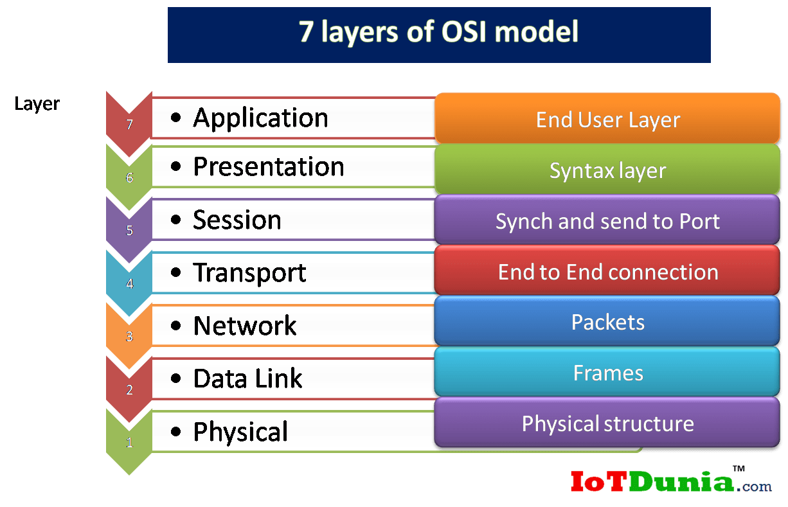

Interview HTML
1. Internet ?
The Internet is the backbone of the Web, the technical infrastructure that makes the Web possible. At its most basic, the Internet is a large network of computers which communicate all together. It began in the 1960s as a US-army-funded research project, All devices are linked together by a protocol
الإنترنت هو العمود الفقري للويب ، والبنية التحتية التي تجعل الويب ممكنًا. في أبسط صوره ، الإنترنت عبارة عن شبكة كبيرة من أجهزة الكمبيوتر التي تتواصل معًا. وبدأ في الستينيات كمشروع بحثي يموله الجيش الأمريكي, فجميع الاجهزة مرتبطة معًا ببروتوكول IP
2. Internet protocol (IP) Suite ?
It is a protocol for routing and processing data packets so that they can travel across networks to reach the correct destination. Data traversing the Internet is divided into packets and this information is assisted by routers, into smaller parts until it reaches the desired place and is dealt with in the form of the transport protocol used with (TCP)&(UDP) The most common protocols.
هو برتوكول لتوجية حزم البيانات ومعالجتها بحيث يمكنها السفر عبر الشبكات للوصول الي الوجهة الصحيحة . تنقسم البيانات التي تعبر الانترنت الي حزم وتساعد هذة المعلومات اجهزة التوجية (ip ) الي اجزاء اصغر حتي تصل الي المكان المطلوب ويتم التعامل معها بشكل بروتوكول النقل المستخدم مع (TCP)و(UDP) اكثر البروتوكولات شيوعا
3. IP Address ?
It is a unique address that cannot be repeated. It is assigned to the device or the domain of the Internet connection. It is a series of numbers that are obtained through DNS analyzers. Which translates human-readable domain names into IP addresses so users can access websites without saving that string.
و عنوان فريد من نوعة لا يمكن تكرارة يتم تعينة للجهاز او مجال الاتصال بالانترنت وهو عبارة عن سلسلة من الارقام يتم الحصول عليها من خلال محللات (DNS) التي تترجم اسماء النطاقات التي يمكن للبشر قرائتها الي عناوين ip حيث يمكن للمستخدمين الوصول الي مواقع الويب دون حفظ هذة السلسلة
4. Transmission Control Protocol (TCP) ?
TCP (Transmission Control Protocol) is one of the main protocols of the Internet protocol suite. It lies between the Application and Network Layers which are used in providing reliable delivery services. It is a connection-oriented protocol for communications that helps in the exchange of messages between different devices over a network. The Internet Protocol (IP), which establishes the technique for sending data packets between computers, works with TCP.
TCP (بروتوكول التحكم في الإرسال) هو أحد البروتوكولات الرئيسية لمجموعة بروتوكولات الإنترنت. إنه يقع بين طبقات التطبيق والشبكة التي تُستخدم في تقديم خدمات توصيل موثوقة. إنه بروتوكول مهيأ للاتصال يساعد في تبادل الرسائل بين الأجهزة المختلفة عبر الشبكة. يعمل بروتوكول الإنترنت (IP) ، الذي ينشئ تقنية إرسال حزم البيانات بين أجهزة الكمبيوتر ، مع بروتوكول TCP.
5. World Wide Web (WWW) ?
The is the universe of network-accessible information, the embodiment of human knowledge. The Web has a body of software, and a set of protocols and conventions. Through the use hypertext and multimedia techniques, the web is easy for anyone to roam, browse, and contribute to. An early talk about the Web gives some more background on how the Web was originally conceived.
إنه عالم المعلومات التي يمكن الوصول إليها عبر الشبكة ، وتجسيد المعرفة البشرية. يحتوي الويب على مجموعة من البرامج ومجموعة من البروتوكولات والاتفاقيات. من خلال استخدام تقنيات الوسائط المتعددة والنص التشعبي ، يسهل على أي شخص التجول والتصفح والمساهمة في الويب. يعطي حديث مبكر عن الويب بعض المعلومات الأساسية عن كيفية إنشاء الويب في الأصل.
6. Browser ?
A browser is an application program that provides a way to look at and interact with all the information on the World.
المتصفح هو برنامج تطبيقي يوفر طريقة للنظر إلى جميع المعلومات الموجودة على العالم والتفاعل معها
7. Packets and Data Link (Open Systems Interconnection(OSI) Model) ?
The (OSI) model describes seven layers that computer systems use to communicate over a network. It was the first standard model for network communications, adopted by all major computer and telecommunication companies in the early 1980s
بيوصف نموذج السبع طبقات التي تستخدمها انظمة الكمبيوتر للتواصل عبر الشبكة ,كان اول نموذج قياسي لاتصالات الشبكة تم انشاءة من قبل جميع شركات الحاسوب والاتصالات الرئيسية اوائل الثمانينات
8. Uniform Resource Locator (URL) ?
The first part of the URL is the scheme, which indicates the protocol that the browser must use to request the resource Usually for websites the protocol is HTTPS or HTTP (its unsecured version). Addressing web pages requires one of these two, but browsers also know how to handle other schemes such as mailto: (to open a mail client)
الجزء الأول من عنوان URL هو المخطط ، الذي يشير إلى البروتوكول الذي يجب أن يستخدمه المتصفح لطلب المورد عادةً ما يكون البروتوكول هو HTTPS أو HTTP (نسخته غير الآمنة) لمواقع الويب. تتطلب معالجة صفحات الويب أحد هذين الأمرين ، لكن المتصفحات تعرف أيضًا كيفية التعامل مع المخططات الأخرى مثل mailto: (لفتح عميل بريد إلكتروني)

9. Hypertext Transfer Protocol (HTTP) ?
Is an application-layer protocol for transmitting hypermedia documents, such as HTML. It was designed for communication between web browsers and web servers, but it can also be used for other purposes. HTTP follows a classical client-server model, with a client opening a connection to make a request, then waiting until it receives a response. HTTP is a stateless protocol, meaning that the server does not keep any data (state) between two requests.
هو طبقة برتوكول لارسال مستندات الوسائط التشعبية مثل HTML تم تصميمة للاتصال بين المتصفحات والخوادم ويمكن استخدامة ايضا في اتباع نموذج كلاسيكيا لخادم العميل حيث يفتح العميل اتصالا لتقديم طلب ثم ينتظر الاستجابة وهو برتوكول عديم الحالة اي لا يحتفظ بالبيانات بين الطلبين
10. Client ?
Used in home and corporate networks, a client is any computer hardware or software device.
هو المستخدم الذي يستخدم الشبكة سواء في المنزل او مكان العمل سواء جهاز كمبيوتر او جهاز برمجي.
11. Server ?
The server is the basis for hosting websites and websites on the Internet that are powered by servers. Therefore, you are in fact dealing with hundreds and thousands of servers every day more than once without feeling, either directly or indirectly.
السيرفر هو أساس استضافة المواقع على الشبكة العنكبوتية والمواقع على شبكة الإنترنت التي تعمل بواسطة سيرفرات. ولذلك فأنت في الحقيقة تتعامل مع مئات وآلاف السيرفرات كل يوم أكثر من مرة دون أن تشعر سواءً بصورة مباشرة أو غير مُباشرة.
12. HTTP Request ?
It is a protocol designed for communication between clients and servers and for request response between them Get and Post.
إنه بروتوكول مصمم للتواصل بين العملاء والخوادم وللاستجابة للطلبات بينهم Get , Post
13. HTTP Response ?
HTTP response status codes indicate whether a specific request has been successfully completed.
تشير الي حالة الطلب انة تم بنجاح.

14. HTTP Messages ?
HTTP messages are how data is exchanged between a server and a client. There are two types of messages: requests sent by the client to trigger an action on the server, and responses, the answer from the server.
هي رسائل تبث عن كيفية تبادل البيانات بين الخادم والعميل وهناك نوعان من الرسائل وهي الطلبات المرسلة من العميل علي الخادم والردود من الخادم للعميل.
15. Domain Name ?
Domain names are a key part of the Internet infrastructure. They provide a human-readable address for any web server available on the Internet.
تعد أسماء النطاقات جزءًا أساسيًا من البنية التحتية للإنترنت. أنها توفر عنوانًا يمكن قراءته بواسطة الإنسان لأي خادم ويب متاح على الإنترنت.
16. Registrar ?
A domain name registrar is a business that handles the reservation of domain names as well as the assignment of IP addresses for those domain names. Domain names are alphanumeric aliases used to access websites their IP address Domain names make it easier to access websites without having to memorize and enter numeric IP addresses.
هو اسم المجال للشركة التي تتعامل مع حجز اسماء النطاقات بالاضافة الي تخصيص عناوين ال IP لاسماء هذة المجالات . وهي اسماء مستعارة ابجدية رقمية تستخدم للوصول الي مواقع الويب الخاص بها لتسهل اسماء المجال للوصول لمواقع الويب دون الحاجة لحفظ عناوين ال IP
17. Internet Corporation for Assigned Names and Numbers(ICANN) ?
The Internet Corporation for Assigned Names and Numbers, or ICANN, is a non-profit organization founded in 1998 and headquartered in California. servers
شركة الإنترنت للأرقام والأسماء المُخصصة أو آيكان هي منظمة غير ربحية تأسست عام 1998 يقع مقرها في كاليفورنيا, وهي مختصة بتوزيع وإدارة عناوين بروتوكول الإنترنت وأسماء المجال وتخصيص أسماء المواقع العليا في جميع أنحاء العالم، ولها وظيفة إدارة الموارد الرئيسية للبنية التحتية للشبكة مثل الحواسيب القاعدية root servers
18. Domain Name System ?
This system links the domain to the Internet Protocol (IP) address, so that we can browse through it without the need to memorize the IP numbers of each site. Where it was invented to facilitate browsing for us, computers do not respond only to numbers only (and here I mean the numbers of IP addresses), but we as humans are certainly unable to memorize the IP numbers of all the sites that we use.
يربط هذا النظام المجال بعنوان بروتوكول الإنترنت (IP) ، حتى نتمكن من تصفحه دون الحاجة إلى حفظ أرقام IP الخاصة بكل موقع. حيث تم اختراعه لتسهيل التصفح بالنسبة لنا ، لا تستجيب أجهزة الكمبيوتر للأرقام فقط (وهنا أعني أرقام عناوين IP) ، لكننا كبشر بالتأكيد غير قادرين على حفظ أرقام IP لجميع المواقع التي نستخدمها.
19. HyperText Markup Language (HTML) ?
HTML (HyperText Markup Language) is the most basic building block of the Web. It defines the meaning and structure of web content. Other technologies besides HTML are generally used to describe a web page's appearance/presentation (CSS) or functionality/behavior (JavaScript).
HTML (لغة ترميز النص التشعبي) هي البنية الأساسية الأساسية للويب. يحدد معنى وهيكل محتوى الويب. تُستخدم التقنيات الأخرى إلى جانب HTML بشكل عام لوصف مظهر صفحة الويب / العرض التقديمي أو الوظيفة / السلوك
20. Dev Tools ?
Developer tools (or "development tools" or short "DevTools") are programs that allow a developer to create, test and debug software.
أدوات المطور (أو "أدوات التطوير" أو "DevTools" القصيرة) هي برامج تسمح للمطور بإنشاء البرامج واختبارها وتصحيحها.
21. Code Editor ?
Code editors are tools typically used by programmers and web developers to write and edit code. They are used for developing software and apps as well as other web development purposes.
محررات الكود هي أدوات يستخدمها عادةً المبرمجون ومطورو الويب لكتابة التعليمات البرمجية وتحريرها. يتم استخدامها لتطوير البرامج والتطبيقات بالإضافة إلى أغراض تطوير الويب الأخرى.
22. HTML Elements ?
Elements are a component of HTML that contains opening tag and closing tag. used to denote document parts such as headers, paragraphs and footers.
العناصر هي أحد مكونات HTML التي تحتوي على علامة الفتح وعلامة الإغلاق. تُستخدم للإشارة إلى أجزاء المستند مثل الرؤوس والفقرات والتذييلات.
23. HTML Forms ?
The HTML element represents a document section containing interactive controls for submitting information.
يمثل عنصر HTML قسمًا من المستندات يحتوي على عناصر تحكم تفاعلية لإرسال المعلومات.
24. HTML Attributes ?
Attributes are an HTML component that sets the behavior of an element or its layout in other languages that contains name and value.
السمات هي أحد مكونات HTML التي تحدد سلوك العنصر أو تخطيطه بلغات أخرى تحتوي على الاسم والقيمة.
25. Anchor Tag ?
The HTML anchor tag defines a hyperlink that links one page to another page. It can create hyperlink to other web page as well as files, location, or any URL. The "href" attribute is the most important attribute of the HTML a tag. and which links to destination page or URL.
تحدد علامة ارتساء HTML الارتباط التشعبي الذي يربط صفحة واحدة بصفحة أخرى. يمكنه إنشاء ارتباط تشعبي إلى صفحة ويب أخرى بالإضافة إلى الملفات أو الموقع أو أي عنوان URL. السمة "href" هي أهم سمة لعلامة HTML. والتي ترتبط بالصفحة المقصودة أو عنوان URL.
26. Document Object Model (DOM) ?
The Document Object Model (DOM) is the data representation of the objects that comprise the structure and content of a document on the web. This guide will introduce the DOM, look at how the DOM represents an HTML document in memory and how to use APIs to create web content and applications.
نموذج كائن المستند (DOM) هو تمثيل البيانات للكائنات التي تشكل بنية ومحتوى مستند على الويب. سيقدم هذا الدليل DOM ، وإلقاء نظرة على كيفية تمثيل DOM لمستند HTML في الذاكرة وكيفية استخدام واجهات برمجة التطبيقات لإنشاء محتوى الويب والتطبيقات.
27. Head ?
The head of an HTML document is the part that is not displayed in the web browser when the page is loaded. It contains information such as the page , links to CSS (if you choose to style your HTML content with CSS), links to custom favicons, and other metadata (data about the HTML, such as the author, and important keywords that describe the document). Web browsers use information contained in the head to render the HTML document correctly.
رأس مستند HTML هو الجزء الذي لا يتم عرضه في متصفح الويب عند تحميل الصفحة. يحتوي على معلومات مثل الصفحة ، وروابط إلى CSS (إذا اخترت تصميم محتوى HTML الخاص بك باستخدام CSS) ، وروابط إلى الرموز المفضلة المخصصة ، وبيانات وصفية أخرى (بيانات حول HTML ، مثل المؤلف ، والكلمات الرئيسية المهمة التي صف الوثيقة). تستخدم متصفحات الويب المعلومات الموجودة في الرأس لتقديم مستند HTML بشكل صحيح.
28. Body ?
HTML
tag defines the main content of an HTML document which displays on the browser. It can contain text content, paragraphs, headings, images, tables, links, videos, etc.تحدد علامة HTML
المحتوى الرئيسي لمستند HTML الذي يتم عرضه على المتصفح. يمكن أن يحتوي على محتوى نصي وفقرات وعناوين وصور وجداول وروابط ومقاطع فيديو وما إلى ذلك.29. Accessibility and Semantics ?
It is the way to write codes and overlap them correctly and in an orderly way that can be read easily and the correct structure for writing HTML codes.
هي طريقة كتابة الأكواد وتداخلها بشكل صحيح وبطريقة منظمة بحيث يمكن قراءتها بسهولة والبنية الصحيحة لكتابة أكواد HTML.
30. Div Tag ?
The HTML
عنصر HTML